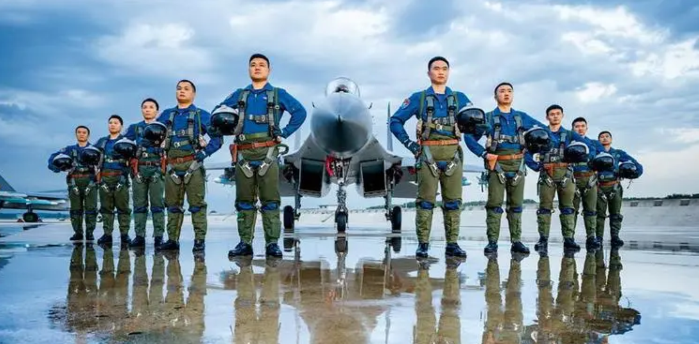
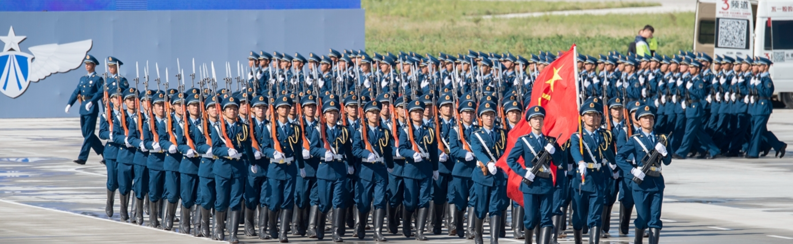
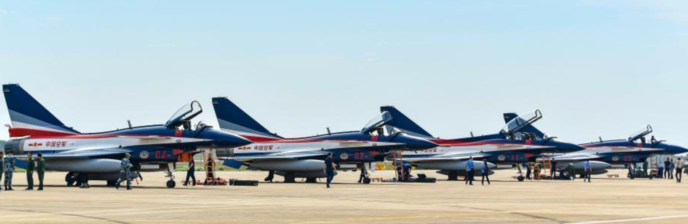

中国空军
中国空军是中国人民解放军的空中作战力量，承担着保卫国家领土、维护国家主权和进行多样化作战任务的重要责任。中国空军经过多年的发展和现代化建设，已经成为一支拥有先进装备和高度专业化的现代化军种。
中国空军的历史可以追溯到1949年中华人民共和国成立之初。在建军初期，中国空军以苏联为主要合作伙伴，从苏联获得了飞机、技术和培训支持。然而，在20世纪50年代后期和60年代初期，中苏关系恶化，中国空军遭受了一系列挑战和困难。此后，中国空军开始进行自主研发和发展，并在技术和装备方面取得了重要突破。
中国空军在近几十年的发展中取得了显著的进步。它经历了从数量到质量的转变，实现了现代化装备的大规模配备。中国空军目前拥有多款先进战斗机，其中最为知名的是歼-20隐形战斗机。歼-20是中国空军自主研发的第五代战斗机，具备隐形特性、超音速巡航和多样化作战能力。歼-20的装备大大提升了中国空军的空中优势和远程打击能力。
除了歼-20，中国空军还装备了其他型号的战斗机，如歼-16、歼-10和歼-11等。这些战斗机在空中作战、防空、空中打击和侦察等方面发挥着重要作用。中国空军还拥有轰炸机、侦察机、无人机、空中加油机和地对空导弹系统等多样化的装备，形成了一个全面、多层次的作战力量。
中国空军的任务范围广泛，涵盖了空中巡逻、防空警戒、空中打击、侦察侦察、反恐维稳、救援和人道主义行动等各种作战任务。它积极参与国内外军事合作和维和行动，为维护地区和世界的和平稳定做出了贡献。中国空军还积极推进军事科技创新，加强飞行员培训和作战能力提升，提高联合作